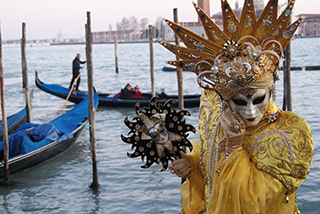
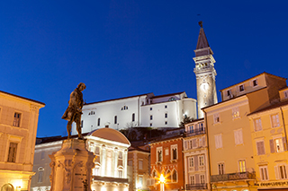
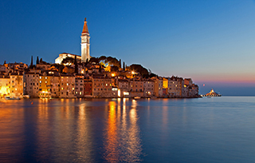
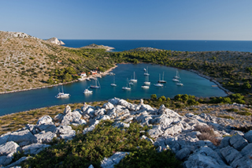
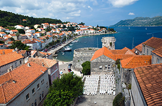
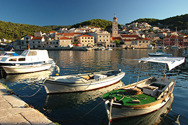
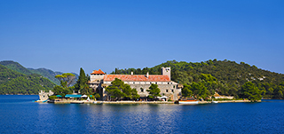
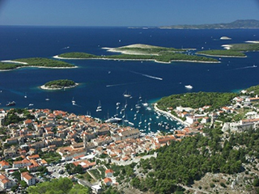
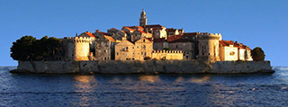
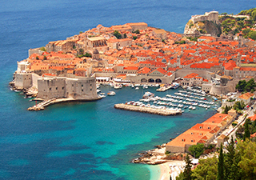

We should like to offer you charter from Venice to Dubrovnik. This privileged charter should be a very special event. Below we highlight some places you visit during this 12 days charter.

You have slept the night in one the nice hotels in Venice and after lunch you board the Queen of Datca. Cocktail is made and the Queen of Datca set sails to Portoroz. (Sailing 3.5 hours)

Dinner is served in Portovoz. You get used to the Queen of Datca, and you have a wonderfull night. In the harbour of Portovoz or in a bay, close to the town. When you are ready we sail to Rovinjo.

On the magnificent coast of Istria (Croatia), right below the Lim Fjord, is the most romantic place in the Mediterranean! The town of Rovinj.Romantic and mysterious, yet full of options for an unforgettable time, Rovinj has become and will remain a town you want to revisit.

Three hours sailing you will find Brijuni.The archipelago of Brijuni is an extraordinary blend of natural, historical and cultural heritage.

Pula is one of Istria's most authentic and complex cities. Even the Romans liked Pula's position and made it their administrative headquarters. Pula can be find close to Brijuni.

One of the more popular of the Croatian islands, Losinj is famous for its lush green vegetation.This island was also under Venetian rule until 1797.

„On the last day of Creation God desired to crown his work and thus created Kornati islands out of tears, stars and breath.” George Bernard Shaw (1929)

Hvar is often alluded to as the "Santorini" of Croatia due to its much photographed Venetian architecture, offers a mix of culture and a vibrant restaurant and café life.

Korcula’s abundant culture and history helped define its popular name ‘Little Dubrovnik’, a wonderfully romantic promenade runs through the town by the city walls and is teeming with lively cafes. Korcula town is also claimed to be the birth place of Marco Polo.
Mljet - not easy to describe feeling that gets you when you enter in silent and mystery beauty of this island. One can see that this island is living on its' own time, by its' own rhythm.

Korcula’s abundant culture and history helped define its popular name ‘Little Dubrovnik’, a wonderfully romantic promenade runs through the town by the city walls and is teeming with lively cafes. Korcula town is also claimed to be the birth place of Marco Polo.